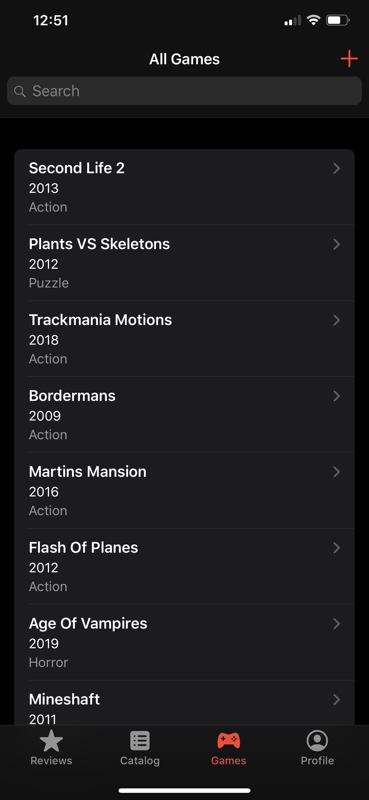
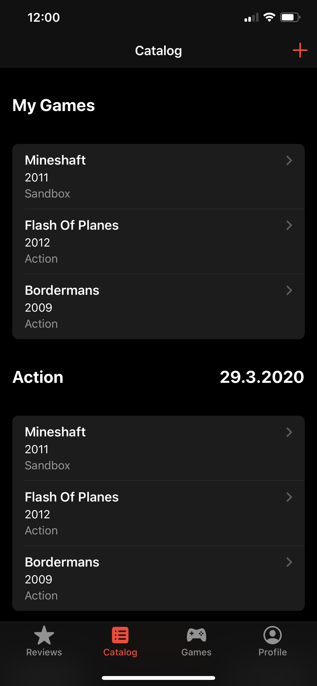
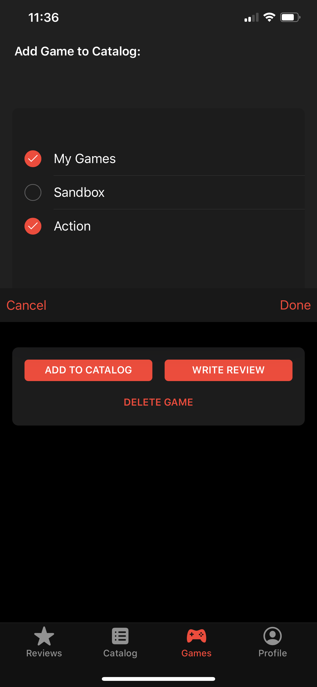
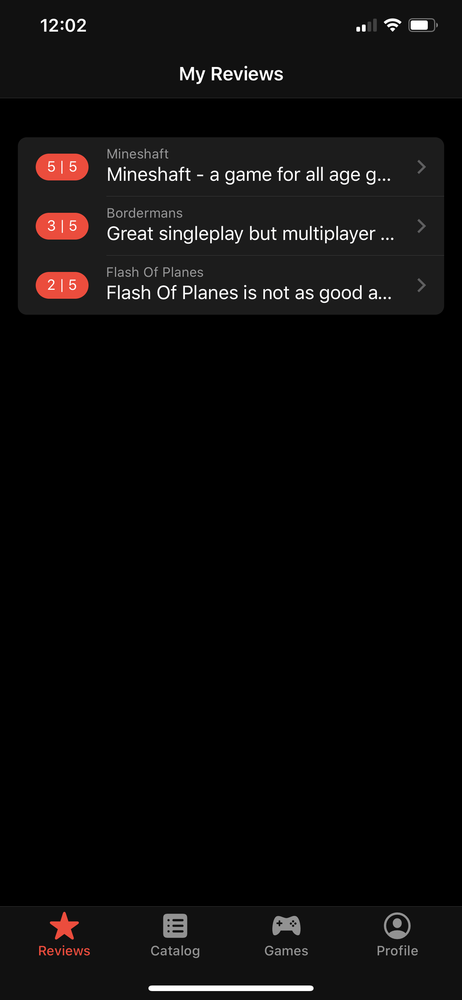
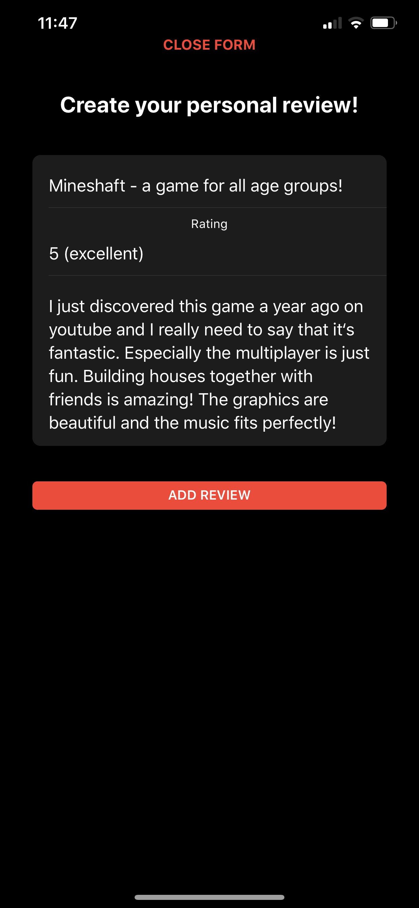
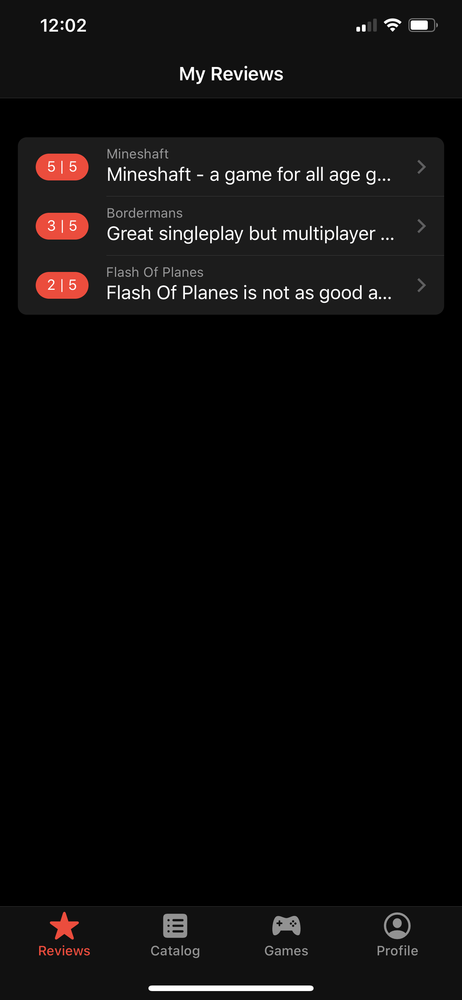
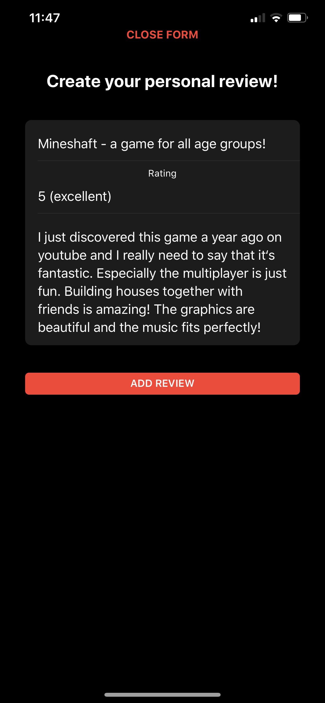
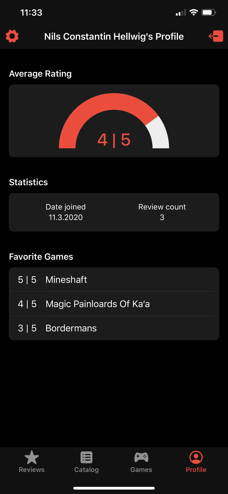
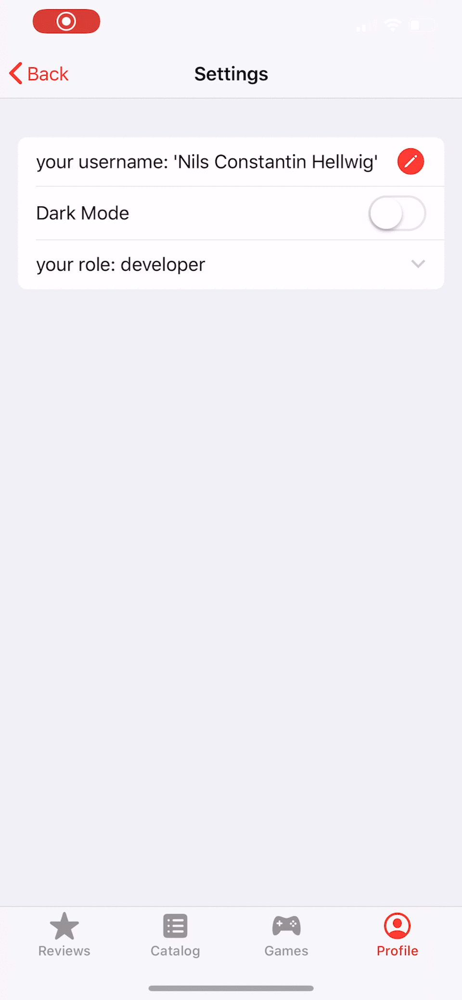

GameHub
Winter 2019/20
Hintergrund
Eine Webanwendung, die als Multimedia-Engineering-Abschlussarbeit in Zusammenarbeit mit Nils Hellwig und Lukas Goclik gebastelt wurde.
Für diesen JS-Kurs wollten wir eine Art Community-Review-Portal und Managemener für Videospiele schaffen. Es können Spiele hinzugefügt, bewertet und zu Listen hinzugefügt werden. Dazu haben wir unter anderem Framework7 verwendet.
Ich war hauptsächlich für das Seitenlayout, Generierung von Inhalten und etwas Funktionalität der Profil- und Einstellungsseiten zuständig.
Game-Übersicht, Katalogansicht und Hinzufügedialog



Game-Einzelansicht, Review-Übersicht und Reviewdialog
 



Profil und Statistiken, Einstellungsseite


Das Projekt wurde mit 1,3 bewertet.